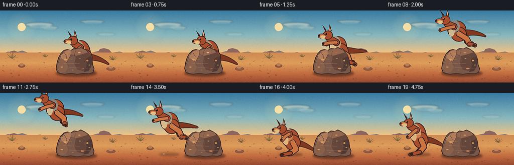
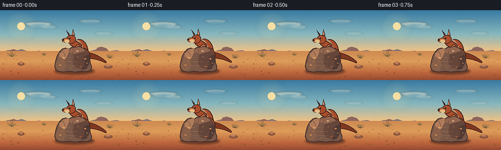
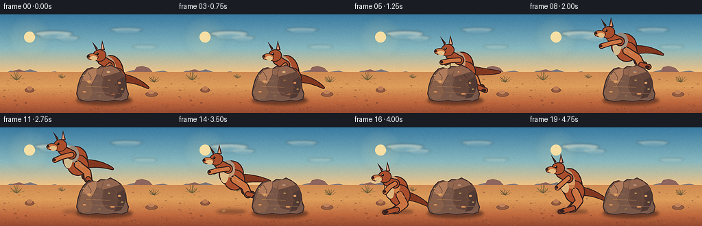
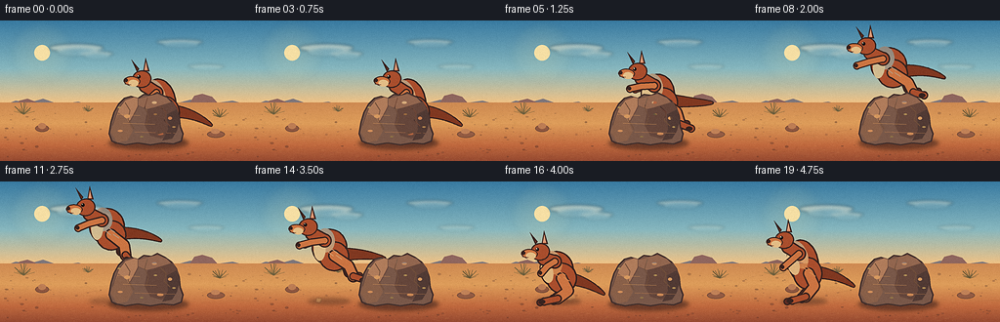

CODING AGENTS AS PIXEL WORLD MODELS
traex/DeepSeek-V4.1-Flash · dynamic_spatial_relationship_0035
点击播放 · 原生 RGB 像素
逐轮保存的候选
回放视频、检查图与代码变化。
每份候选均可单独播放。实际图片检查记录在下方工具轨迹中。
候选 01播放与检查图
点击播放 · 原生 RGB 像素


展开代码变化
--- 上一保存版本
+++ 本次保存版本
@@ -0,0 +1,701 @@
+"""Render a short outback scene of a kangaroo moving from behind a rock to its left."""
+
+from __future__ import annotations
+
+import math
+from pathlib import Path
+
+import numpy as np
+from PIL import Image, ImageDraw, ImageFilter
+
+import artifact_io
+
+
+WIDTH = 256
+HEIGHT = 144
+FRAMES = 20
+FPS = 4.0
+SCALE = 4
+W = WIDTH * SCALE
+H = HEIGHT * SCALE
+
+CASE_DIR = Path(__file__).resolve().parent
+RNG = np.random.default_rng(1907)
+
+
+def rgba(hex_value: str, alpha: int = 255) -> tuple[int, int, int, int]:
+ value = hex_value.lstrip("#")
+ return (
+ int(value[0:2], 16),
+ int(value[2:4], 16),
+ int(value[4:6], 16),
+ alpha,
+ )
+
+
+def mix(a: tuple[int, int, int], b: tuple[int, int, int], t: float) -> tuple[int, int, int]:
+ return tuple(round(x + (y - x) * t) for x, y in zip(a, b))
+
+
+def p(point: tuple[float, float]) -> tuple[int, int]:
+ return round(point[0] * SCALE), round(point[1] * SCALE)
+
+
+def polygon(draw: ImageDraw.ImageDraw, points, fill, outline=None, width=1):
+ draw.polygon([p(point) for point in points], fill=fill, outline=outline, width=round(width * SCALE))
+
+
+def ellipse(draw: ImageDraw.ImageDraw, box, fill, outline=None, width=1):
+ draw.ellipse(tuple(round(v * SCALE) for v in box), fill=fill, outline=outline, width=round(width * SCALE))
+
+
+def line(draw: ImageDraw.ImageDraw, points, fill, width):
+ draw.line([p(point) for point in points], fill=fill, width=max(1, round(width * SCALE)), joint="curve")
+
+
+def ellipse_points(cx, cy, rx, ry, angle=0.0, count=72):
+ angle = math.radians(angle)
+ ca, sa = math.cos(angle), math.sin(angle)
+ points = []
+ for i in range(count):
+ theta = math.tau * i / count
+ x, y = rx * math.cos(theta), ry * math.sin(theta)
+ points.append((cx + x * ca - y * sa, cy + x * sa + y * ca))
+ return points
+
+
+def draw_rotated_ellipse(draw, cx, cy, rx, ry, angle, fill, outline=None, outline_width=1.0):
+ polygon(draw, ellipse_points(cx, cy, rx, ry, angle), fill, outline, outline_width)
+
+
+def capsule(draw, points, width, fill, outline=None, outline_extra=1.8):
+ if outline is not None:
+ line(draw, points, outline, width + outline_extra * 2)
+ for point in (points[0], points[-1]):
+ ellipse(
+ draw,
+ (point[0] - width / 2 - outline_extra, point[1] - width / 2 - outline_extra,
+ point[0] + width / 2 + outline_extra, point[1] + width / 2 + outline_extra),
+ outline,
+ )
+ line(draw, points, fill, width)
+ for point in (points[0], points[-1]):
+ ellipse(
+ draw,
+ (point[0] - width / 2, point[1] - width / 2, point[0] + width / 2, point[1] + width / 2),
+ fill,
+ )
+
+
+def quadratic(a, b, c, t):
+ u = 1.0 - t
+ return (
+ u * u * a[0] + 2.0 * u * t * b[0] + t * t * c[0],
+ u * u * a[1] + 2.0 * u * t * b[1] + t * t * c[1],
+ )
+
+
+def tapered_tail(draw, a, b, c, base_width, fill, outline):
+ steps = 55
+ for i in range(steps):
+ t = i / (steps - 1)
+ x, y = quadratic(a, b, c, t)
+ width = base_width * (1.0 - t) ** 0.72 + 1.3
+ ellipse(draw, (x - width / 2 - 1.1, y - width / 2 - 1.1,
+ x + width / 2 + 1.1, y + width / 2 + 1.1), outline)
+ for i in range(steps):
+ t = i / (steps - 1)
+ x, y = quadratic(a, b, c, t)
+ width = base_width * (1.0 - t) ** 0.72 + 1.3
+ ellipse(draw, (x - width / 2, y - width / 2, x + width / 2, y + width / 2), fill)
+
+
+def draw_kangaroo_layer(x: float, baseline: float, pose: dict, phase: float) -> Image.Image:
+ layer = Image.new("RGBA", (W, H), (0, 0, 0, 0))
+ d = ImageDraw.Draw(layer)
+
+ def q(point):
+ return (x + point[0], baseline + point[1])
+
+ dark = rgba("#38231f")
+ far_dark = rgba("#5c2d23")
+ fur = rgba("#a94e2d")
+ fur_light = rgba("#cb7442")
+ fur_dark = rgba("#803821")
+ cream = rgba("#e3bd86")
+ ear_inner = rgba("#d79775")
+
+ # Tail, then far-side limbs, so overlapping anatomy reads as one animal.
+ tapered_tail(
+ d,
+ q(pose["tail"]),
+ q(pose["tail_mid"]),
+ q(pose["tail_tip"]),
+ pose["tail_width"],
+ fur_dark,
+ dark,
+ )
+
+ far_leg = [q(pose["far_hip"]), q(pose["far_knee"]), q(pose["far_ankle"])]
+ capsule(d, far_leg, 8.0, far_dark, dark, 1.4)
+ foot_far = [q(pose["far_ankle"]), q(pose["far_foot"])]
+ capsule(d, foot_far, 5.1, far_dark, dark, 1.2)
+
+ far_arm = [q(pose["far_shoulder"]), q(pose["far_elbow"]), q(pose["far_paw"])]
+ capsule(d, far_arm, 5.0, fur_dark, dark, 1.1)
+
+ # Torso and powerful haunch.
+ tx, ty, trx, try_, tang = pose["torso"]
+ draw_rotated_ellipse(d, *q((tx, ty)), trx, try_, tang, fur, dark, 1.6)
+ hx, hy, hrx, hry, hang = pose["haunch"]
+ draw_rotated_ellipse(d, *q((hx, hy)), hrx, hry, hang, fur, dark, 1.5)
+
+ # Warm top-light and a restrained cream chest.
+ draw_rotated_ellipse(
+ d,
+ *q((tx - 4, ty - 7)),
+ trx * 0.52,
+ try_ * 0.65,
+ tang - 10,
+ rgba("#c46d3e", 115),
+ )
+ draw_rotated_ellipse(
+ d,
+ *q((tx - 10, ty + 2)),
+ 6.1,
+ 12.0,
+ tang - 4,
+ rgba("#e1bb85", 205),
+ )
+
+ # Near hind leg and long flat foot.
+ near_leg = [q(pose["near_hip"]), q(pose["near_knee"]), q(pose["near_ankle"])]
+ capsule(d, near_leg, 9.2, fur_light, dark, 1.5)
+ foot = [q(pose["near_ankle"]), q(pose["near_foot"])]
+ capsule(d, foot, 5.7, fur, dark, 1.3)
+ ellipse(
+ d,
+ (x + pose["near_foot"][0] - 5.4, baseline + pose["near_foot"][1] - 2.2,
+ x + pose["near_foot"][0] + 1.3, baseline + pose["near_foot"][1] + 2.5),
+ dark,
+ )
+
+ # Neck joins the head without an awkward seam.
+ neck_top = pose["head"]
+ capsule(
+ d,
+ [q(pose["shoulder"]), q((neck_top[0] + 4, neck_top[1] + 7))],
+ 11.5,
+ fur,
+ dark,
+ 1.4,
+ )
+
+ # Ears are separate tapered wedges, one slightly behind the other.
+ head = pose["head"]
+ ear_back = [
+ q((head[0] - 4.8, head[1] - 7.3)),
+ q((head[0] - 10.5, head[1] - 20.0)),
+ q((head[0] - 2.4, head[1] - 10.4)),
+ ]
+ polygon(d, ear_back, fur_dark, dark, 1.2)
+ ear_front = [
+ q((head[0] + 1.5, head[1] - 7.8)),
+ q((head[0] + 4.0, head[1] - 21.8)),
+ q((head[0] + 8.0, head[1] - 8.0)),
+ ]
+ polygon(d, ear_front, fur, dark, 1.2)
+ inner = [
+ q((head[0] + 2.7, head[1] - 9.5)),
+ q((head[0] + 4.3, head[1] - 17.7)),
+ q((head[0] + 5.9, head[1] - 9.6)),
+ ]
+ polygon(d, inner, ear_inner)
+
+ # Head, long muzzle, eye, nose and cheek.
+ hx, hy = head
+ draw_rotated_ellipse(d, *q((hx, hy)), 10.0, 9.0, -11, fur, dark, 1.35)
+ snout = pose["snout"]
+ draw_rotated_ellipse(d, *q(snout), 8.5, 5.0, 3, fur_light, dark, 1.1)
+ draw_rotated_ellipse(d, *q((snout[0] + 1.5, snout[1] + 2.1)), 5.1, 3.5, 2, cream)
+ ellipse(
+ d,
+ (x + snout[0] - 7.9, baseline + snout[1] - 2.7,
+ x + snout[0] - 4.2, baseline + snout[1] + 1.0),
+ dark,
+ )
+ ellipse(
+ d,
+ (x + hx - 4.6, baseline + hy - 4.2,
+ x + hx - 1.2, baseline + hy - 0.7),
+ rgba("#171313"),
+ )
+ ellipse(
+ d,
+ (x + hx - 4.0, baseline + hy - 3.7,
+ x + hx - 3.1, baseline + hy - 2.8),
+ rgba("#f8e7c7"),
+ )
+ line(
+ d,
+ [q((snout[0] - 7.2, snout[1] + 3.1)), q((snout[0] - 1.0, snout[1] + 3.8))],
+ rgba("#6b3a2d"),
+ 0.7,
+ )
+
+ # Near forearm reaches forward; it overlaps the chest cleanly.
+ near_arm = [q(pose["shoulder"]), q(pose["elbow"]), q(pose["paw"])]
+ capsule(d, near_arm, 5.5, fur_light, dark, 1.2)
+ ellipse(
+ d,
+ (x + pose["paw"][0] - 2.8, baseline + pose["paw"][1] - 2.4,
+ x + pose["paw"][0] + 1.1, baseline + pose["paw"][1] + 1.6),
+ dark,
+ )
+
+ # A few directional fur strokes give the flat shapes some form.
+ strokes = [
+ ((pose["haunch"][0] - 2, pose["haunch"][1] - 7),
+ (pose["haunch"][0] + 4, pose["haunch"][1] - 3)),
+ ((pose["haunch"][0] + 2, pose["haunch"][1] - 1),
+ (pose["haunch"][0] + 8, pose["haunch"][1] + 3)),
+ ((pose["torso"][0] - 1, pose["torso"][1] + 5),
+ (pose["torso"][0] + 4, pose["torso"][1] + 9)),
+ ]
+ for a, b in strokes:
+ line(d, [q(a), q(b)], rgba("#d3824f", 130), 0.8)
+
+ return layer
+
+
+def lerp(a, b, t):
+ return a + (b - a) * t
+
+
+def blend_pose(a: dict, b: dict, t: float) -> dict:
+ result = {}
+ for key in a:
+ av, bv = a[key], b[key]
+ if isinstance(av, tuple):
+ result[key] = tuple(lerp(x, y, t) for x, y in zip(av, bv))
+ else:
+ result[key] = lerp(av, bv, t)
+ return result
+
+
+STAND = {
+ "torso": (2.0, -40.0, 16.2, 23.0, -12.0),
+ "haunch": (7.0, -28.0, 15.2, 16.8, -2.0),
+ "shoulder": (-2.0, -48.0),
+ "far_shoulder": (0.0, -48.0),
+ "far_elbow": (-6.0, -41.0),
+ "far_paw": (-12.0, -35.0),
+ "elbow": (-10.0, -41.0),
+ "paw": (-18.0, -34.0),
+ "near_hip": (8.0, -28.0),
+ "near_knee": (14.0, -15.0),
+ "near_ankle": (5.0, -4.0),
+ "near_foot": (-9.0, 0.0),
+ "far_hip": (5.0, -28.0),
+ "far_knee": (10.0, -14.0),
+ "far_ankle": (1.0, -3.0),
+ "far_foot": (-14.0, 1.0),
+ "head": (-17.0, -62.0),
+ "snout": (-27.0, -60.0),
+ "tail": (15.0, -29.0),
+ "tail_mid": (35.0, -28.0),
+ "tail_tip": (54.0, -15.0),
+ "tail_width": 10.0,
+}
+
+CROUCH = {
+ "torso": (2.0, -33.0, 17.5, 19.0, -8.0),
+ "haunch": (7.0, -24.0, 15.8, 16.0, 0.0),
+ "shoulder": (0.0, -41.0),
+ "far_shoulder": (1.0, -41.0),
+ "far_elbow": (-6.0, -36.0),
+ "far_paw": (-12.0, -31.0),
+ "elbow": (-8.0, -36.0),
+ "paw": (-14.0, -29.0),
+ "near_hip": (7.0, -24.0),
+ "near_knee": (14.0, -11.0),
+ "near_ankle": (3.0, -3.0),
+ "near_foot": (-11.0, 0.0),
+ "far_hip": (4.0, -24.0),
+ "far_knee": (9.0, -10.0),
+ "far_ankle": (-1.0, -2.0),
+ "far_foot": (-15.0, 1.0),
+ "head": (-15.0, -51.0),
+ "snout": (-26.0, -49.0),
+ "tail": (14.0, -24.0),
+ "tail_mid": (34.0, -20.0),
+ "tail_tip": (50.0, -8.0),
+ "tail_width": 10.0,
+}
+
+AIR_START = {
+ "torso": (2.0, -43.0, 17.0, 20.5, -5.0),
+ "haunch": (8.0, -33.0, 15.0, 16.0, 3.0),
+ "shoulder": (-1.0, -51.0),
+ "far_shoulder": (1.0, -51.0),
+ "far_elbow": (-10.0, -50.0),
+ "far_paw": (-20.0, -47.0),
+ "elbow": (-14.0, -51.0),
+ "paw": (-25.0, -49.0),
+ "near_hip": (8.0, -33.0),
+ "near_knee": (21.0, -23.0),
+ "near_ankle": (24.0, -10.0),
+ "near_foot": (35.0, -5.0),
+ "far_hip": (5.0, -33.0),
+ "far_knee": (18.0, -25.0),
+ "far_ankle": (20.0, -14.0),
+ "far_foot": (31.0, -10.0),
+ "head": (-18.0, -66.0),
+ "snout": (-29.0, -64.0),
+ "tail": (16.0, -35.0),
+ "tail_mid": (38.0, -31.0),
+ "tail_tip": (57.0, -34.0),
+ "tail_width": 10.2,
+}
+
+AIR_APEX = {
+ "torso": (4.0, -46.0, 19.0, 18.0, 9.0),
+ "haunch": (8.0, -37.0, 16.0, 15.0, 10.0),
+ "shoulder": (-2.0, -52.0),
+ "far_shoulder": (0.0, -52.0),
+ "far_elbow": (-12.0, -51.0),
+ "far_paw": (-23.0, -47.0),
+ "elbow": (-16.0, -49.0),
+ "paw": (-29.0, -45.0),
+ "near_hip": (8.0, -38.0),
+ "near_knee": (24.0, -28.0),
+ "near_ankle": (30.0, -18.0),
+ "near_foot": (42.0, -15.0),
+ "far_hip": (5.0, -38.0),
+ "far_knee": (21.0, -31.0),
+ "far_ankle": (25.0, -22.0),
+ "far_foot": (36.0, -19.0),
+ "head": (-19.0, -65.0),
+ "snout": (-31.0, -63.0),
+ "tail": (16.0, -39.0),
+ "tail_mid": (40.0, -43.0),
+ "tail_tip": (61.0, -33.0),
+ "tail_width": 10.4,
+}
+
+AIR_END = {
+ "torso": (2.0, -41.0, 17.2, 20.0, -4.0),
+ "haunch": (7.0, -31.0, 15.2, 17.0, 0.0),
+ "shoulder": (-1.0, -47.0),
+ "far_shoulder": (1.0, -47.0),
+ "far_elbow": (-9.0, -44.0),
+ "far_paw": (-17.0, -39.0),
+ "elbow": (-12.0, -43.0),
+ "paw": (-20.0, -37.0),
+ "near_hip": (7.0, -31.0),
+ "near_knee": (15.0, -19.0),
+ "near_ankle": (8.0, -8.0),
+ "near_foot": (-6.0, -3.0),
+ "far_hip": (4.0, -31.0),
+ "far_knee": (12.0, -21.0),
+ "far_ankle": (5.0, -12.0),
+ "far_foot": (-8.0, -8.0),
+ "head": (-17.0, -61.0),
+ "snout": (-28.0, -59.0),
+ "tail": (15.0, -32.0),
+ "tail_mid": (35.0, -31.0),
+ "tail_tip": (53.0, -23.0),
+ "tail_width": 10.0,
+}
+
+
+def build_background() -> Image.Image:
+ top = (56, 122, 161)
+ middle = (135, 183, 190)
+ horizon = (241, 194, 132)
+ array = np.empty((H, W, 3), dtype=np.uint8)
+ horizon_row = int(H * 0.59)
+ for y in range(H):
+ if y <= horizon_row:
+ t = y / max(1, horizon_row)
+ if t < 0.58:
+ color = mix(top, middle, t / 0.58)
+ else:
+ color = mix(middle, horizon, (t - 0.58) / 0.42)
+ else:
+ color = horizon
+ array[y, :, :] = color
+ image = Image.fromarray(array, "RGB").convert("RGBA")
+
+ glow = Image.new("RGBA", (W, H), (0, 0, 0, 0))
+ gd = ImageDraw.Draw(glow)
+ for radius, alpha in ((31, 12), (23, 18), (15, 28)):
+ gd.ellipse(
+ (round((43 - radius) * SCALE), round((33 - radius) * SCALE),
+ round((43 + radius) * SCALE), round((33 + radius) * SCALE)),
+ fill=(255, 226, 154, alpha),
+ )
+ glow = glow.filter(ImageFilter.GaussianBlur(4.0 * SCALE))
+ image = Image.alpha_composite(image, glow)
+ d = ImageDraw.Draw(image)
+ ellipse(d, (35, 25, 51, 41), rgba("#f6dfa4", 210))
+
+ # Thin, wind-stretched clouds.
+ clouds = [
+ (78, 28, 28, 4.2, 108),
+ (99, 34, 17, 2.8, 80),
+ (184, 22, 24, 3.0, 82),
+ (211, 47, 19, 2.2, 62),
+ ]
+ cloud_layer = Image.new("RGBA", (W, H), (0, 0, 0, 0))
+ cd = ImageDraw.Draw(cloud_layer)
+ for cx, cy, rx, ry, alpha in clouds:
+ ellipse(cd, (cx - rx, cy - ry, cx + rx, cy + ry), (255, 241, 213, alpha))
+ ellipse(cd, (cx - rx * 0.7, cy + ry * 0.3, cx + rx * 0.8, cy + ry * 2.1),
+ (214, 220, 205, alpha // 3))
+ cloud_layer = cloud_layer.filter(ImageFilter.GaussianBlur(1.4 * SCALE))
+ image = Image.alpha_composite(image, cloud_layer)
+ d = ImageDraw.Draw(image)
+
+ # Hazy blue-violet ranges and two flat mesas.
+ polygon(d, [(0, 88), (16, 82), (30, 84), (44, 80), (61, 86), (80, 83),
+ (97, 88), (116, 84), (138, 87), (157, 82), (176, 86), (195, 81),
+ (217, 85), (238, 82), (256, 87), (256, 93), (0, 93)],
+ rgba("#7f777b", 170))
+ polygon(d, [(0, 88), (20, 85), (39, 88), (57, 86), (77, 90), (100, 87),
+ (128, 90), (148, 87), (172, 90), (198, 86), (224, 89), (256, 86),
+ (256, 96), (0, 96)], rgba("#9c8177", 150))
+ polygon(d, [(192, 88), (199, 77), (207, 75), (217, 78), (225, 87)], rgba("#8f665e", 210))
+ polygon(d, [(14, 89), (20, 82), (28, 80), (36, 83), (40, 89)], rgba("#8d655e", 185))
+
+ # Warm ground with layered perspective bands.
+ ground_top = 84
+ for y in range(ground_top, HEIGHT):
+ t = (y - ground_top) / (HEIGHT - ground_top)
+ if t < 0.35:
+ color = mix((206, 138, 82), (222, 157, 90), t / 0.35)
+ elif t < 0.72:
+ color = mix((222, 157, 90), (192, 105, 62), (t - 0.35) / 0.37)
+ else:
+ color = mix((192, 105, 62), (148, 72, 48), (t - 0.72) / 0.28)
+ d.rectangle((0, round(y * SCALE), W, round((y + 1) * SCALE)), fill=color)
+
+ # Fine ground texture: dry grain, pebbles, and shallow wind lines.
+ texture = Image.new("RGBA", (W, H), (0, 0, 0, 0))
+ td = ImageDraw.Draw(texture)
+ for _ in range(1800):
+ x = RNG.uniform(0, WIDTH)
+ y = RNG.uniform(87, HEIGHT)
+ depth = (y - 87) / (HEIGHT - 87)
+ length = RNG.uniform(0.35, 2.4) * (0.5 + depth)
+ if RNG.random() < 0.54:
+ color = (91, 48, 34, RNG.integers(20, 70))
+ else:
+ color = (247, 190, 115, RNG.integers(18, 58))
+ td.line(
+ [(round(x * SCALE), round(y * SCALE)),
+ (round((x + length) * SCALE), round(y * SCALE))],
+ fill=color,
+ width=1,
+ )
+ for _ in range(70):
+ x = RNG.uniform(4, 252)
+ y = RNG.uniform(94, 140)
+ rx = RNG.uniform(0.5, 1.8)
+ ry = rx * RNG.uniform(0.35, 0.7)
+ td.ellipse(
+ (round((x - rx) * SCALE), round((y - ry) * SCALE),
+ round((x + rx) * SCALE), round((y + ry) * SCALE)),
+ fill=(78, 45, 35, RNG.integers(50, 100)),
+ )
+ for _ in range(12):
+ y = RNG.uniform(97, 134)
+ x = RNG.uniform(-10, 235)
+ length = RNG.uniform(14, 47)
+ td.arc(
+ (round(x * SCALE), round((y - 1.8) * SCALE),
+ round((x + length) * SCALE), round((y + 2.2) * SCALE)),
+ 185, 338, fill=(118, 61, 39, 25), width=round(0.45 * SCALE),
+ )
+ image = Image.alpha_composite(image, texture)
+ d = ImageDraw.Draw(image)
+
+ # Sparse dry shrubs anchor the horizon and frame the central action.
+ def shrub(cx, cy, size, color):
+ for i in range(11):
+ angle = math.radians(-165 + i * 15 + RNG.uniform(-4, 4))
+ length = size * RNG.uniform(0.55, 1.1)
+ x2 = cx + math.cos(angle) * length
+ y2 = cy + math.sin(angle) * length
+ line(d, [(cx, cy), (x2, y2)], color, RNG.uniform(0.35, 0.8))
+
+ shrub(24, 96, 12, rgba("#6f603c", 185))
+ shrub(225, 99, 10, rgba("#675838", 170))
+ shrub(90, 93, 6, rgba("#70603f", 130))
+
+ # A few background stones sit behind the principal boulder.
+ ellipse(d, (36, 107, 50, 114), rgba("#8f573f"), rgba("#5d3d31"), 0.6)
+ ellipse(d, (39, 105, 47, 111), rgba("#bd7d54", 165))
+ ellipse(d, (212, 113, 230, 120), rgba("#945c43"), rgba("#5c3d31"), 0.6)
+ ellipse(d, (216, 111, 225, 116), rgba("#c18258", 145))
+
+ return image
+
+
+def build_rock() -> Image.Image:
+ layer = Image.new("RGBA", (W, H), (0, 0, 0, 0))
+ d = ImageDraw.Draw(layer)
+ outline = rgba("#422f2c")
+ body = rgba("#795849")
+ mid = rgba("#92664f")
+ light = rgba("#b07c5b")
+ deep = rgba("#4e3933")
+
+ rock = [
+ (114, 124), (111, 116), (113, 104), (116, 94), (121, 85), (127, 79),
+ (134, 77), (141, 79), (147, 75), (155, 76), (161, 73), (169, 77),
+ (176, 82), (181, 89), (184, 98), (185, 108), (188, 116), (186, 124),
+ (178, 127), (166, 126), (154, 128), (141, 126), (128, 128), (119, 126),
+ ]
+ polygon(d, rock, body, outline, 1.5)
+
+ # Broad planes and a sun-facing upper-left face.
+ polygon(d, [(115, 107), (121, 90), (128, 81), (137, 78), (145, 80), (140, 91),
+ (134, 102), (126, 112), (118, 118)], light, rgba("#63443a"), 0.7)
+ polygon(d, [(141, 80), (152, 77), (161, 75), (171, 79), (176, 84), (163, 88),
+ (150, 91), (141, 87)], mid, rgba("#5b4038"), 0.55)
+ polygon(d, [(151, 91), (164, 87), (177, 83), (182, 92), (183, 105), (177, 116),
+ (165, 121), (154, 118), (148, 107)], rgba("#65463b"))
+ polygon(d, [(121, 94), (130, 101), (136, 113), (130, 123), (120, 125), (113, 114)],
+ rgba("#896049"))
+ polygon(d, [(171, 96), (181, 91), (184, 102), (181, 113), (176, 121), (166, 123),
+ (172, 112)], rgba("#513a34"))
+
+ # Cracks and thin strata follow the rock's volume.
+ cracks = [
+ [(128, 84), (133, 92), (131, 101), (137, 111)],
+ [(151, 79), (148, 89), (152, 98), (149, 108)],
+ [(164, 88), (170, 94), (168, 102), (174, 108)],
+ ]
+ for crack in cracks:
+ line(d, crack, rgba("#4b3530", 185), 0.75)
+ for y, x1, x2 in [(96, 120, 143), (105, 126, 160), (114, 138, 179)]:
+ line(d, [(x1, y), (x2, y + 1.2)], rgba("#d29a6c", 52), 0.55)
+
+ # Small chipped facets and dry lichen catch the light.
+ for cx, cy, rx, ry in [
+ (130, 98, 3.0, 1.8), (158, 84, 2.5, 1.3), (174, 100, 2.1, 1.4),
+ (123, 113, 2.6, 1.1), (164, 116, 3.2, 1.2),
+ ]:
+ ellipse(d, (cx - rx, cy - ry, cx + rx, cy + ry), rgba("#c99870", 80))
+ for cx, cy in [(122, 89), (159, 96), (178, 109), (145, 119)]:
+ ellipse(d, (cx - 1.7, cy - 0.7, cx + 1.7, cy + 0.7), rgba("#8d8a56", 130))
+
+ # Contact shadow and a narrow reflected rim.
+ shadow = Image.new("RGBA", (W, H), (0, 0, 0, 0))
+ sd = ImageDraw.Draw(shadow)
+ ellipse(sd, (111, 119, 193, 132), (50, 29, 27, 150))
+ shadow = shadow.filter(ImageFilter.GaussianBlur(2.0 * SCALE))
+ result = Image.alpha_composite(shadow, layer)
+ return result
+
+
+def draw_shadow(base: Image.Image, x: float, baseline: float, lift: float):
+ shadow = Image.new("RGBA", (W, H), (0, 0, 0, 0))
+ d = ImageDraw.Draw(shadow)
+ ground_y = 123.0
+ spread = max(9.0, 24.0 - lift * 0.18)
+ alpha = round(105 * max(0.32, 1.0 - lift / 82.0))
+ ellipse(d, (x - spread, ground_y - 3.5, x + spread, ground_y + 3.0), (48, 28, 24, alpha))
+ shadow = shadow.filter(ImageFilter.GaussianBlur(1.9 * SCALE))
+ return Image.alpha_composite(base, shadow)
+
+
+def draw_dust(base: Image.Image, frame_index: int, x: float, baseline: float, phase: float):
+ layer = Image.new("RGBA", (W, H), (0, 0, 0, 0))
+ d = ImageDraw.Draw(layer)
+ events = []
+ if 4 <= frame_index <= 8:
+ events.append((5.0, 162.0, 123.0, frame_index - 4))
+ if 14 <= frame_index <= 18:
+ events.append((16.0, 68.0, 123.0, frame_index - 14))
+ for _, ex, ey, age in events:
+ rng = np.random.default_rng(4000 + int(ex) + age * 31)
+ for i in range(9):
+ direction = -1 if ex > 100 else 1
+ dx = direction * rng.uniform(0.5, 4.0) * (age + 1)
+ dy = -rng.uniform(0.2, 2.4) * (age + 1)
+ radius = rng.uniform(0.5, 1.7) * (1 + age * 0.17)
+ alpha = int(90 * max(0.0, 1.0 - age / 5.0))
+ ellipse(d, (ex + dx - radius, ey + dy - radius,
+ ex + dx + radius, ey + dy + radius), (235, 191, 126, alpha))
+ layer = layer.filter(ImageFilter.GaussianBlur(0.6 * SCALE))
+ return Image.alpha_composite(base, layer)
+
+
+def motion_state(frame_index: int):
+ # The held opening makes the initial behind-rock relationship unmistakable.
+ if frame_index <= 3:
+ x = 162.0
+ baseline = 122.0 + (0.0, -0.7, 0.2, 0.0)[frame_index]
+ return x, baseline, STAND, 0.0
+ if frame_index == 4:
+ return 162.0, 123.0, CROUCH, 0.0
+
+ # One long, readable leap from the hidden right side to open ground on the left.
+ trajectory = {
+ 5: (159.0, 115.0, 0.12),
+ 6: (154.0, 104.0, 0.25),
+ 7: (147.0, 93.0, 0.38),
+ 8: (138.0, 84.0, 0.52),
+ 9: (128.0, 77.0, 0.66),
+ 10: (117.0, 73.0, 0.78),
+ 11: (106.0, 75.0, 0.67),
+ 12: (96.0, 81.0, 0.55),
+ 13: (87.0, 90.0, 0.43),
+ 14: (78.0, 102.0, 0.31),
+ 15: (70.0, 115.0, 0.19),
+ }
+ if frame_index in trajectory:
+ x, baseline, t = trajectory[frame_index]
+ if t <= 0.5:
+ pose = blend_pose(AIR_START, AIR_APEX, min(1.0, t / 0.5))
+ else:
+ pose = blend_pose(AIR_APEX, AIR_END, (t - 0.5) / 0.5)
+ return x, baseline, pose, t
+ if frame_index in (16, 17):
+ settle = 0.0 if frame_index == 16 else 0.65
+ return lerp(64.0, 63.0, settle), lerp(123.0, 122.0, settle), blend_pose(CROUCH, STAND, 0.24 * settle), 0.0
+ return 63.0, 122.0, STAND, 0.0
+
+
+def add_final_grain(image: Image.Image, frame_index: int) -> Image.Image:
+ array = np.asarray(image).astype(np.int16)
+ noise = np.random.default_rng(9100 + frame_index).normal(0.0, 1.8, (HEIGHT, WIDTH, 1))
+ array = np.clip(array + noise, 0, 255).astype(np.uint8)
+ return Image.fromarray(array, "RGB")
+
+
+def main():
+ background = build_background()
+ rock = build_rock()
+ frames = []
+
+ for frame_index in range(FRAMES):
+ x, baseline, pose, phase = motion_state(frame_index)
+ lift = max(0.0, 123.0 - baseline)
+ canvas = draw_shadow(background, x + 3.0, baseline, lift)
+ canvas = draw_dust(canvas, frame_index, x, baseline, phase)
+ kangaroo = draw_kangaroo_layer(x, baseline, pose, phase)
+ canvas = Image.alpha_composite(canvas, kangaroo)
+ canvas = Image.alpha_composite(canvas, rock)
+ final = canvas.convert("RGB").resize((WIDTH, HEIGHT), Image.Resampling.LANCZOS)
+ final = final.filter(ImageFilter.UnsharpMask(radius=0.65, percent=72, threshold=2))
+ final = add_final_grain(final, frame_index)
+ frames.append(np.asarray(final, dtype=np.uint8))
+
+ artifact_io.save(frames, CASE_DIR)
+
+
+if __name__ == "__main__":
+ main()
候选 02播放与检查图
点击播放 · 原生 RGB 像素

展开代码变化
--- 上一保存版本
+++ 本次保存版本
@@ -644,17 +644,17 @@
# One long, readable leap from the hidden right side to open ground on the left.
trajectory = {
- 5: (159.0, 115.0, 0.12),
- 6: (154.0, 104.0, 0.25),
- 7: (147.0, 93.0, 0.38),
- 8: (138.0, 84.0, 0.52),
- 9: (128.0, 77.0, 0.66),
- 10: (117.0, 73.0, 0.78),
- 11: (106.0, 75.0, 0.67),
- 12: (96.0, 81.0, 0.55),
- 13: (87.0, 90.0, 0.43),
- 14: (78.0, 102.0, 0.31),
- 15: (70.0, 115.0, 0.19),
+ 5: (159.0, 118.0, 0.12),
+ 6: (154.0, 108.0, 0.25),
+ 7: (147.0, 98.0, 0.38),
+ 8: (138.0, 91.0, 0.52),
+ 9: (128.0, 88.5, 0.66),
+ 10: (117.0, 88.0, 0.78),
+ 11: (106.0, 90.0, 0.67),
+ 12: (96.0, 96.0, 0.55),
+ 13: (87.0, 104.0, 0.43),
+ 14: (78.0, 112.0, 0.31),
+ 15: (70.0, 119.0, 0.19),
}
if frame_index in trajectory:
x, baseline, t = trajectory[frame_index]
候选 03播放与检查图
点击播放 · 原生 RGB 像素

展开代码变化
--- 上一保存版本
+++ 本次保存版本
@@ -654,7 +654,7 @@
12: (96.0, 96.0, 0.55),
13: (87.0, 104.0, 0.43),
14: (78.0, 112.0, 0.31),
- 15: (70.0, 119.0, 0.19),
+ 15: (68.0, 119.0, 0.19),
}
if frame_index in trajectory:
x, baseline, t = trajectory[frame_index]
@@ -665,8 +665,8 @@
return x, baseline, pose, t
if frame_index in (16, 17):
settle = 0.0 if frame_index == 16 else 0.65
- return lerp(64.0, 63.0, settle), lerp(123.0, 122.0, settle), blend_pose(CROUCH, STAND, 0.24 * settle), 0.0
- return 63.0, 122.0, STAND, 0.0
+ return lerp(56.0, 52.0, settle), lerp(123.0, 122.0, settle), blend_pose(CROUCH, STAND, 0.24 * settle), 0.0
+ return 52.0, 122.0, STAND, 0.0
def add_final_grain(image: Image.Image, frame_index: int) -> Image.Image:
可观测工具轨迹
实际执行的命令与返回图片。
命令 1exit 0
/bin/bash -c "pwd && rg --files -g 'prompt.txt' -g 'GENERATION_RULES.md' -g 'task_spec.json' -g '"'!node_modules'"' -g '"'!venv'"'"
命令 2exit 0
/bin/bash -c 'ls -la'
命令 3exit 0
/bin/bash -c 'cat prompt.txt'
命令 4exit 0
/bin/bash -c 'cat GENERATION_RULES.md'
命令 5exit 0
/bin/bash -c 'cat task_spec.json'
命令 6exit 0
/bin/bash -c "sed -n '1,260p' artifact_io.py"
命令 7exit 0
/bin/bash -c "python - <<'PY'
import PIL, numpy
print('PIL', PIL.__version__)
print('numpy', numpy.__version__)
PY"命令 8exit 0
/bin/bash -c 'command -v ffmpeg || true'
命令 9exit 0
/bin/bash -c 'fc-list | head -5'
命令 10exit 0
/bin/bash -c 'python generate.py'
命令 11exit 0
/bin/bash -c 'command -v chafa || command -v viu || command -v jp2 || true'
命令 12exit 0
/bin/bash -c "python - <<'PY' from PIL import Image import os for name in ['inspection.png','transition_check.png','frames/00.png','frames/10.png','frames/19.png']: im=Image.open(name) print(name, im.size, im.mode) PY"
命令 13exit 0
/bin/bash -c "python - <<'PY'
from PIL import Image
import numpy as np
chars=' .:-=+*#%@'
for f in [0,5,8,10,14,19]:
a=np.asarray(Image.open(f'frames/{f:02d}.png').convert('L').resize((96,54)))
print('\\nFRAME',f)
for row in a:
print(''.join(chars[min(9,int(v)*10//256)] for v in row))
PY"命令 14exit 0
/bin/bash -c "python - <<'PY'
import generate
from PIL import Image
import numpy as np
for fi in [0,8,10,15,19]:
x,b,pose,phase=generate.motion_state(fi)
im=generate.draw_kangaroo_layer(x,b,pose,phase)
a=np.asarray(im)[:,:,3]
# downsample 2x horizontally, 3x vertically using max
h,w=a.shape
rows=[]
for y in range(0,h,12):
s=''
for x in range(0,w,8):
s += '#' if a[y:y+12,x:x+8].max()>80 else ' '
rows.append(s)
print('\\nFRAME',fi,'x',x,'baseline',b)
print('\\n'.join(rows))
PY"命令 15exit 0
/bin/bash -c "python - <<'PY'
from PIL import Image
im=Image.open('inspection.png')
im.resize((2048,660)).save('.tmp/inspection_large.png')
print('.tmp/inspection_large.png')
PY"命令 16exit 0
/bin/bash -c 'python generate.py'
命令 17exit 0
/bin/bash -c 'python generate.py'
命令 18exit 0
/bin/bash -c "python - <<'PY'
from PIL import Image
import numpy as np
for f in [0,4,5,8,10,14,15,19]:
im=Image.open(f'frames/{f:02d}.png')
a=np.asarray(im)
# bounds of warm orange kangaroo pixels, approximate
mask=(a[:,:,0]>85)&(a[:,:,0]>a[:,:,1]*1.15)&(a[:,:,1]<145)&(a[:,:,2]<120)
ys,xs=np.where(mask)
print(f, 'orange bbox', (xs.min(),ys.min(),xs.max(),ys.max()) if len(xs) else None, 'mean', tuple(a.reshape(-1,3).mean(0).round(1)))
PY"命令 19exit 0
/bin/bash -c 'ls -lh generate.py pixels.npz index.html inspection.png transition_check.png audio.wav 2>/dev/null || true'
命令 20exit 0
/bin/bash -c "find frames -maxdepth 1 -type f -name '*.png' | wc -l && sha256sum pixels.npz index.html"
命令 21exit 0
/bin/bash -c "python - <<'PY'
import numpy as np
from PIL import Image
z=np.load('pixels.npz')['pixels']
print('pixels shape/dtype', z.shape, z.dtype)
print('frame pngs', Image.open('frames/00.png').size, Image.open('frames/19.png').size)
print('nonblank variance', float(np.var(z)))
PY"命令 22exit 0
/bin/bash -c 'python -m py_compile generate.py && sha256sum pixels.npz > .tmp/before.sha && python generate.py >/dev/null 2>&1 && sha256sum pixels.npz > .tmp/after.sha && diff -u .tmp/before.sha .tmp/after.sha && cat .tmp/after.sha'
命令 23exit 0
/bin/bash -c "python - <<'PY'
import json,re
from pathlib import Path
html=Path('index.html').read_text()
m=re.search(r'__DATA__',html)
print('template placeholder remaining:', bool(m))
print('player bytes:', len(html))
print('pixels files:', len(list(Path('frames').glob('*.png'))))
PY"命令 24exit 0
/bin/bash -c 'git status --short 2>/dev/null || true'
保存候选 3 份；完成命令 24 次；可验证图片返回 0 张。原始 API 响应与完整日志保留在本地。